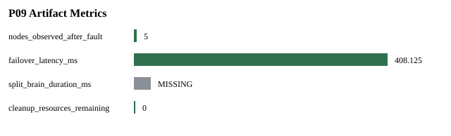

Status: PASS
Source phase: P08_FAILOVER_SPLIT_BRAIN
| Name | Status |
|---|---|
| source_phase | PASS |
| real_valkey_evidence | PASS |
| failover | PASS |
| cleanup | PASS |
| Metric | Status | Reason |
|---|---|---|
| split_brain_duration_ms | MISSING | The primary-stop failover gate did not measure a split-brain window. |
